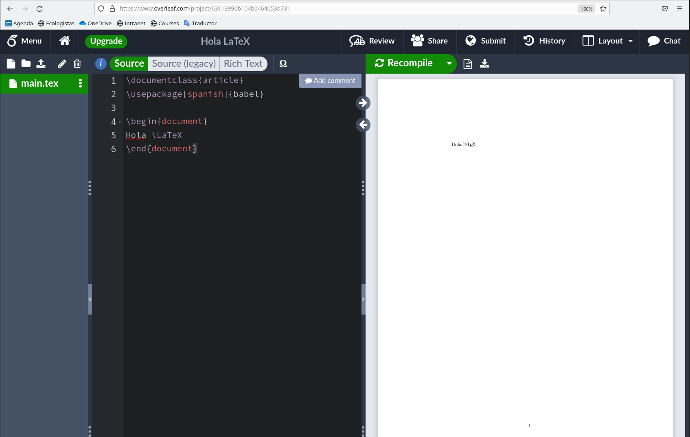

1 Introducción
1.1 ¿Qué es \(\TeX\)?
\(\TeX\) es un sistema de composición de documentos de alta calidad, orientado especialmente a la creación de documentos científicos y técnicos que incluyen fórmulas matemáticas. Fue creado por Donald Knuth en 1978.
A diferencia de un procesador de textos como por ejemplo Microsoft Word, \(\TeX\) no es una aplicación sino un lenguaje de programación que require compilar el código fuente para obtener el documento final. Esto, que a priori podría parecer una desventaja, en realidad es la gran ventaja de \(\TeX\) frente a los procesadores de texto que siguen el paradigma WYSIWYG (What You See Is What You Get), ya que permite separar fácilmente el contenido y la estructura de un documento, de su formato, de manera que el usuario puede centrarse en el contenido y la estructura del documento, y dejar que \(\TeX\) se encargue del formato. De hecho, \(\TeX\) incorpora un potente lenguaje de marcado para estructurar y formatear el texto de un documento. Por ejemplo, mientras que para poner una palabra en negrita con un procesador de textos como Microsoft Word, bastaría con seleccionar la palabra y hacer clic en el botón de negrita para ver automáticamente la palabra en negrita en la pantalla del ordenador, en \(\TeX\) habría que escribir en el fichero con el código fuente {\bf palabra} y después compilar el código fuente para obtener un documento final con la palabra en negrita (el comando \bf, que permite aplicar la negrita, se conoce como marca o tag en inglés.)
La página principal con información sobre \(\TeX\) es la del TeX Users Group.
1.2 ¿Qué es \(\LaTeX\)

\(\LaTeX\) es un conjunto de macros para \(\TeX\) debido originalmente a Leslie Lamport para facilitar el uso de \(\TeX\).
Tanto \(\TeX\) como \(\LaTeX\) son programas de código abierto, liberados bajo la licencia LPPL.
Otra de las grandes ventajas de \(\LaTeX\) es que existen multitud de paquetes de código libre para generar distintos tipos de documentos que pueden descargarse desde el repositorio CRAN.
La página principal sobre \(\LaTeX\) es The LaTeX project.
1.3 Instalación
Existen distintas distribuciones de \(\LaTeX\) y algunas de ellas son multiplataforma, es decir, están disponibles para diferentes sistemas operativos. Las distribuciones más comunes son:
- \(\TeX\)Live para Windows, Mac OSX y Linux.
- MiK\(\TeX\) para Windows, Mac OSX y Linux.
- Mac\(\TeX\) para Mac OSX.
En sus respectivas páginas está explicado el procedimiento de instalación de cada una.
Junto a la distribución de \(\LaTeX\) es también habitual instalar algún editor de texto para escribir el código fuente. En realidad puede usarse cualquier editor de texto que ya esté instalado en nuestro sistema operativo, pero los existen entornos de edición especializados que facilitan muchas de las tareas del proceso de composición de documentos con \(\LaTeX\). Los más comunes son:
- TexMaker. Es un editor de texto libre, multiplataforma, con muchos asistentes disponibles que permite previsualizar en tiempo real el documento final en pdf
- Texstudio. Es otro editor libre y multiplataforma que incorpora aún más asistentes que el anterior.
- Vim Es un editor de texto simple de propósito general que también es libre y multiplataforma. Incorpora paquetes o plugins específicos para facilitar la creación de documentos con \(\LaTeX\). Especialmente indicado para trabajar desde la terminal.
- Emacs. Es otro editor similar a Vim, muy extendido entre los usuarios que prefieren usar la terminal.
- Visual Studio Code. Es un potente entorno de desarrollo multipropósito. Dispone de paquetes para los lenguajes de programación más comunes, entre ellos \(\LaTeX\).
Pero también se puede empezar a componer documentos sin necesidad de instalar nada en el ordenador, usando un editor on-line como por ejemplo Overleaf
1.4 Hola LaTeX
A modo de ejemplo, empezaremos por crear un sencillo documento con el texto “Hola \(\LaTeX\)”.
Para ello utilizaremos nuestro editor de texto preferido para crear un fichero de texto con el nombre main.tex y el siguiente contenido:
\documentclass{article}
\usepackage[spanish]{babel}
\begin{document}
Hola \LaTeX
\end{document}El nombre del fichero de texto con el código fuente de \(\LaTeX\) puede ser el que queramos, pero es importante que la extensión sea .tex,
Aunque más adelante se verá la estructura general del código fuente de un documento en \(\LaTeX\), a continuación se explica brevemente el contenido de este fichero:
- En la primera línea se especifica el tipo de documento (
article). - En la segunda línea se especifica el idioma del documento (
spanish). - La tercera línea marca el comienzo del documento.
- La cuarta línea contiene el texto del documento.
\LaTeXes un comando que produce la salida \(\LaTeX\). - La quinta línea marca el final del documento.
1.4.1 Compilación
Para obtener el documento final hay que compilar el fichero fuente. Existen diferentes formas de hacerlo y en los editores anteriores suele ser tan sencillo como hacer clic en un botón o pulsar una combinación de teclas, pero en última instancia todos ellos hacen una llamada al compilador de \(\LaTeX\) que es quien se encarga de convertir el código fuente en el documento final.
Cada distribución de \(\LaTeX\) viene con varios compiladores. Los más habituales son:
latex: Es el compilador más antiguo y genera documentos en formatodvi, que es un formato independiente creado mucho antes que el formatopdf.pdflatex: Es el compilador más usado y genera documentos en formatopdf.xelatex: Es un compilador más moderno que admite caracteres Unicode en el código fuente y el uso de tipografías más modernas.
En una terminal, la compilación de este documento sería tecleando el comando latex main.tex, pdflatex main.tex o xelatex main.tex, dependiendo del compilador que se quiera usar. A continuación se muestra la salida que general el compilador pdflatex al compilar el fichero main.tex.
> pdflatex main.tex
s is pdfTeX, Version 3.141592653-2.6-1.40.22 (TeX Live 2021) (preloaded format=pdflatex)
restricted \write18 enabled.
entering extended mode
(./main.tex
LaTeX2e <2021-06-01> patch level 1
L3 programming layer <2021-06-18>
(/usr/local/texlive/2021/texmf-dist/tex/latex/base/article.cls
Document Class: article 2021/02/12 v1.4n Standard LaTeX document class
(/usr/local/texlive/2021/texmf-dist/tex/latex/base/size10.clo))
(/usr/local/texlive/2021/texmf-dist/tex/generic/babel/babel.sty
(/usr/local/texlive/2021/texmf-dist/tex/generic/babel/babel.def
(/usr/local/texlive/2021/texmf-dist/tex/generic/babel/txtbabel.def))
(/usr/local/texlive/2021/texmf-dist/tex/generic/babel-spanish/spanish.ldf))
(/usr/local/texlive/2021/texmf-dist/tex/latex/l3backend/l3backend-pdftex.def)
(./main.aux) [1{/usr/local/texlive/2021/texmf-var/fonts/map/pdftex/updmap/pdfte
x.map}] (./main.aux) )</usr/local/texlive/2021/texmf-dist/fonts/type1/public/am
sfonts/cm/cmr10.pfb></usr/local/texlive/2021/texmf-dist/fonts/type1/public/amsf
onts/cm/cmr7.pfb>
Output written on main.pdf (1 page, 20106 bytes).
Transcript written on main.log.En la Figura fig-overleaf-hola-latex se puede apreciar el documento final que se obtiene tras compilar el código fuente en Overleaf.
